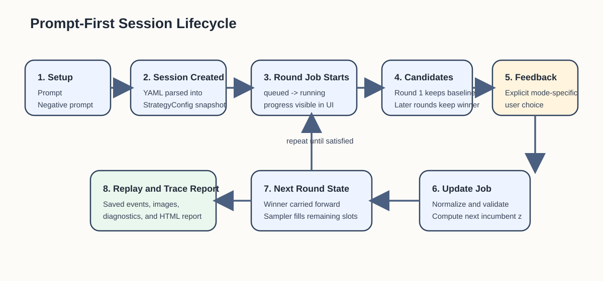

Developer Guide
1. Purpose
This guide explains how the current StableSteering prototype is organized, how to run it locally, and how to extend it safely.
It is intended for developers who want to:
- run the app locally
- understand the code layout
- add new samplers or updaters
- change storage or generation behavior
- maintain test coverage while evolving the system
For a student-oriented conceptual walkthrough, start with student_tutorial.md.
2. Current Implementation Scope
The current implementation is a minimal research MVP with:
- a FastAPI backend
- a simple HTML/CSS/JS frontend
- SQLite-backed local persistence
- a GPU-only real Diffusers runtime by default
- deterministic mock SVG generation for tests only
- basic replay export
- asynchronous round-generation and feedback jobs with visible progress status
- rich backend logging and persisted trace events
- per-session HTML trace reports saved by the backend
- frontend trace capture and visible trace panels
- automated tests for feedback, lifecycle, tracing, and replay export
- a reusable real GPU-backed example-run generator for demos and teaching
It does not yet include:
- shared multi-user persistence beyond the local SQLite repository
- authentication
- multi-user coordination
3. Project Structure
Key directories:
-
app Main application code.
-
app/core Shared settings and Pydantic schemas.
-
app/engine Generation and orchestration logic.
-
app/storage SQLite repository implementation.
-
app/samplers Candidate proposal strategies.
-
app/updaters Steering-state update strategies.
-
app/feedback Feedback normalization logic.
-
app/frontend Jinja templates and static frontend assets.
-
tests Automated tests.
-
scripts Convenience scripts such as the local dev launcher.
4. Local Development Setup
Install the project with development dependencies:
python -m pip install -e .[dev]
Install inference dependencies for the real Diffusers backend:
python -m pip install -e .[dev,inference]
Run the local server:
python scripts/run_dev.py
To prefer the real Diffusers backend after preparing model assets:
set STABLE_STEERING_GENERATION_BACKEND=diffusers
python scripts/run_dev.py
The real Diffusers path is GPU-only and explicitly targets cuda. The default
server runtime now requires that path and should fail fast when a CUDA-capable
GPU is not available.
Run the standalone real-model smoke test:
python scripts/smoke_real_diffusers.py
Generate the full example walkthrough bundle:
python scripts/create_real_e2e_example.py
Open:
http://127.0.0.1:8000
Run the tests:
python -m pytest
Run browser tests:
npm install
npm run test:e2e:chrome
Run a headed single-worker debug session in Chrome:
npm run test:e2e:debug
Prepare Hugging Face assets:
python scripts/setup_huggingface.py
Inspect persisted trace files:
data/traces/
Per-session run bundles live under:
data/traces/sessions/<session_id>/
That bundle includes:
backend-events.jsonlfrontend-events.jsonlreport.html
5. Runtime Flow
The current runtime flow is:
- create an experiment
- create a session from that experiment
- request the next round
- sampler proposes candidates
- Diffusers renders candidate images on GPU
- frontend displays the candidate images
- frontend starts async jobs for round generation and feedback submission
- users see progress and status while the job runs
- frontend and backend trace the active flow
- feedback is normalized and validated against the round
- updater computes the next incumbent state
- replay export exposes the persisted trajectory
- the backend refreshes the saved HTML trace report for the session

When a prepared local model is available and the backend is set to diffusers,
the generation step uses a real Stable Diffusion pipeline, pins inference to
GPU, and applies a deterministic steering offset to prompt_embeds before
rendering. If the model or GPU requirements are not satisfied, startup fails.
5.1 Async API Endpoints
Long-running session actions are exposed as asynchronous job endpoints:
-
POST /sessions/{session_id}/rounds/next/asyncQueues next-round generation and returns a job handle. -
POST /rounds/{round_id}/feedback/asyncQueues feedback application and returns a job handle. -
GET /jobs/{job_id}Returns the current job snapshot.
The async POST routes return:
job_idstatus_url- initial
state
The job status payload includes:
stateprogressstatus_messageresultwhen completeerrorwhen failed
Current job states are:
queuedrunningsucceededfailed
5.2 Progress Behavior
The browser session view uses the async endpoints by default.
During round generation and feedback submission:
- the clicked action button is disabled
- a visible progress panel is shown
- the page polls
GET /jobs/{job_id} status_messageis rendered as human-readable progress textprogressupdates the progress bar- the page refreshes automatically after success
- errors are shown inline if the job fails
- impossible async requests are rejected before queueing when the session or round is already in a conflicting state
This keeps the UI responsive while the real GPU-backed backend works in the background.
Current progress phrases are intentionally operation-specific. For example:
- round generation reports phases such as
Checking session readiness,Sampling 5 candidate directions,Rendering candidate images on the model backend, andRefreshing trace report and replay data - feedback submission reports phases such as
Normalizing and validating user preferences,Updating the steering model from your feedback, andFeedback applied and next round unlocked

6. Core Extension Points
6.1 Add a sampler
To add a sampler:
- create a new module under app/samplers
- implement
propose(session, seed) -> list[Candidate] - register the sampler in orchestrator.py
- add tests for deterministic behavior and output shape
6.2 Add an updater
To add an updater:
- create a new module under app/updaters
- implement
update(session, candidates, feedback) -> (next_z, summary) - register the updater in orchestrator.py
- add tests for update behavior and edge cases
6.3 Evolve generation
To evolve the generation backend further:
- keep the same high-level contract as MockGenerationEngine
- preserve deterministic testability by keeping the mock path available only in tests
- avoid letting generation concerns leak into API routes
- keep artifact paths stable enough for replay
Before running or extending the real generator, stage a compatible model snapshot locally with:
python scripts/setup_huggingface.py --model-id runwayml/stable-diffusion-v1-5 --output-root models
The setup script downloads the expected diffusers module directories and writes a local manifest so the prepared snapshot is easier to inspect and reuse.
The runtime contract is:
diffusersmeans "use the real model on GPU"- the default app runtime enforces
diffusers - runtime code never falls back to
mock mockremains available only for explicitly constructed test harnesses that setSTABLE_STEERING_ALLOW_TEST_MOCK_BACKEND=true
The current browser test contract is:
npm run test:e2e:chromecovers the UI flow and replay export API smoke pathnpm run test:e2e:debugruns the same suite headed for interactive debuggingnpm run test:e2e:realprovides an opt-in real-backend browser smoke path for CUDA-capable environments with prepared model assets
The current API quality contract is:
- JSON API errors use the structured
ApiErrorpayload shape - replay exports include explicit schema and app versions
- long-running session actions are exposed as async jobs with pollable status
- session trace reports are backend-owned artifacts, not frontend-only console output
- setup-time config validation rejects unsupported sampler and updater values before a session is created
The current feedback-mode contract is:
scalar_ratinguses explicit clickable star ratingspairwiseuses explicit winner and loser selection controlswinner_onlyuses an explicit winner selection controlapprove_rejectuses explicit approval checkboxes plus winner selectiontop_kuses explicit rank inputs with uniqueness validation- the backend rejects submissions whose
feedback_typedoes not match the session's configuredfeedback_mode
The current seed policy contract is:
fixed-per-roundshares one seed across newly rendered candidates in the roundfixed-per-candidateassigns a deterministic seed per visible candidate slotfixed-per-candidate-roleshares seeds across candidates with the same sampler role- carried-forward incumbents keep the original winning image and seed instead of being re-rendered
The current roadmap also includes expanding steering support beyond prompt-only generation into:
- image-prompt or image-variation workflows
- inpainting workflows
- ControlNet-guided workflows
6.4 Evolve persistence
To move from SQLite to PostgreSQL or another shared store:
- keep repository method names stable
- preserve session and round ordering
- preserve replay export shape
- add migration-safe tests before swapping implementations
7. Coding Conventions for This Project
- prefer small, focused modules
- keep orchestration logic out of route handlers
- keep feedback normalization separate from update logic
- keep persistence inspectable and replay-friendly
- preserve deterministic behavior in tests
- add docstrings when adding new services or public models
8. Testing Expectations
Before merging meaningful behavior changes:
- run
python -m pytest - run
npm run test:e2e:chromefor UI-impacting changes - use
npm run test:e2e:debugwhen you need to watch the browser flow interactively - use
npm run test:e2e:realwhen you need browser validation against the real Diffusers backend - add or update at least one relevant test when changing lifecycle behavior
- preserve replay export compatibility where possible
- keep the explicitly injected mock test path working even if the runtime stays GPU-only
- keep tracing outputs stable enough for debugging and auditability
- keep
report.htmlreadable when changing trace payload shapes
9. Common Development Tasks
Start fresh local data
Delete the local data directory if you want a clean environment:
data/
Inspect persisted state
Look in:
data/stablesteering.db
data/artifacts/
data/traces/
Open the readable report for one session:
/sessions/{session_id}/trace-report
Validate the browser flow
Minimal manual smoke test:
- open
/setup - create an experiment
- open the session page
- generate a round
- submit ratings
- open replay
10. Recommended Next Engineering Steps
- add export packaging for session trace bundles
- add richer end-to-end browser tests